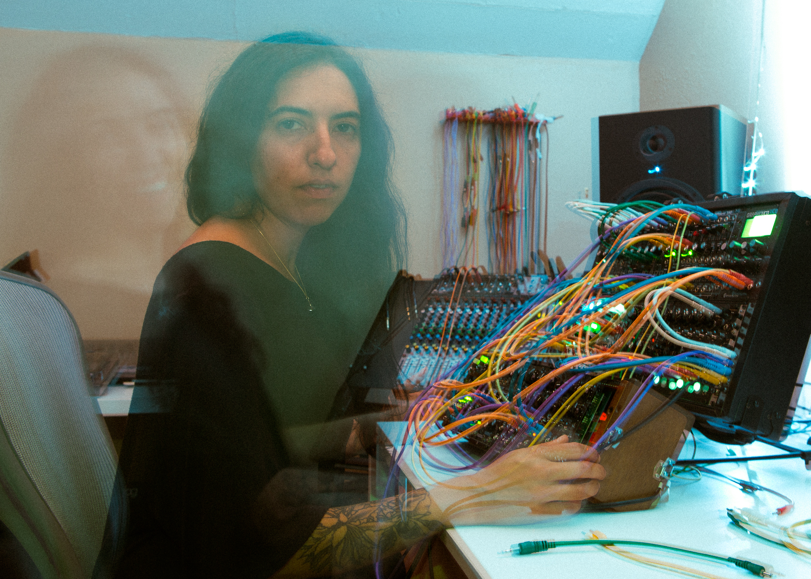

Sofia Acosta

Hello! Welcome to my first portfolio website. This is me in my studio in Portland, Oregon. One of my favorite places on earth where I have the chance to freely express and create by myself or with a group of people. This picture was taken by my friend Al Pomper in 2019.
Projects and concepts I have been learning on my firs week of programming school at Epicodus:
- My first webpage was created with my classmate Jeroen. We practice different concepts mostly HTML, navigating and making sure we understand Git and styling with a litle css
- Cupcake Website was created with my classmate Jessica. Here we were able to practice documenting properly with README and styling with classes. I was able to learn more in depth how to navigate Git.
- Animal Shelter Website was created with my classmate Mike. We were able to practice Cascading and Debugging. Later in the day our classmate Sylvja joined us and we were able to practice debugging, although it was frustrating not finding a solution, we practice searching and patience :)
About Me
My name is Sofia Acosta and I am from Mexico City. I have always been interested in technology, education, music, art and community empowerment. I am drawn to always challenge myself and accomplish my goals wherever I am in life.
Background
I have a bachelor's degree in International Business from Universidad Iberoamericana. Although I never pursued a career in business, I have been able to use the skills I learned in many fields:
- Project manager in event production and digital marketing
- Management and service at the restaurant industry
- Self management in my artistic endeavours as Coast2c
My Current Interests: I am currently working on my second EP and shifting professional careers. My last job was in the restaurant industry and I am very interested in becoming a software engineer and starting a new professional career so I decided to join Epicodus to start this journey.
I know this is the beginning of an amazing journey and that there will be many struggles and difficulties but I am ready to embrace this challenge with a positive lens knowing that I will dive into the unknown and many failures before achiving success.
"Researchers have known for some time that the brain is like a muscle; that the more you use it, the more it grows."